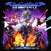
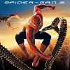

Persoonlijke Informatie:
- Glenn Van Aelst
- Remparden 12 9700 Oudenaarde
- 04 12 34 56 78 90
- glenn.vanaelst@student.vives.be
Computerspellen met beeldscherm worden videospellen genoemd. Daarnaast zijn er computerspellen die (onder andere) op geluid of op tekst gebaseerd zijn, of computerspellen met een spelbord of andere fysiek sport- of speelmateriaal. "Spel" wordt hier in de ruime zin van het woord gebruikt, waaronder dan ook zogeheten serious games vallen. Zo kunnen spellen voor divertissement en/of voor educatie zijn. Een spel kan solo worden gespeeld en/of met een of meerdere spelers. Bij meerdere spelers kan het spelen om de beurt gaan, of tegelijk, of elke speler kan apart kiezen wanneer hij meedoet, zoals bij een spel waarin gezamenlijk een virtuele wereld wordt opgebouwd.
Lezen of lexicale verwerking is het opnemen en verwerken van geschreven of gedrukte woorden (schrift). Bij lezen moeten zowel individuele woorden als het zinsverband worden begrepen.
Jogging is een duursport waarbij men voor langere tijd loopt. Het is een tragere vorm van hardlopen, maar is wel sneller dan lopen of stappen. De bedoeling is om het voor langere tijd met een constante snelheid vol te houden en zo de lichamelijke conditie te verbeteren.
| Band: Dragonforce | Muziek: Videogame Soundtracks | Film: Spider-Man 2 |
|---|---|---|
|  |  |
 |
| Dragonforce.com | Hollow Knight OST | Spider-Man 2 Info |
| Vakken: | Mijn Punten: | Student1: | Student2: | Student3: |
|---|---|---|---|---|
| Fundamentals of Programming 1 | 9 | - | - | - |
| Web Development 1 | 8 | - | - | - |
| Problem Solving 1 | 8 | - | - | - |